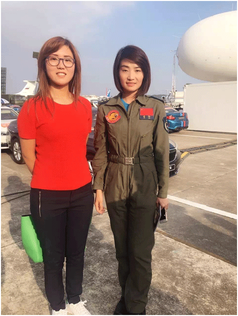

《西厢窥简图》赞助王曌华宸参赛英国特技飞行
2016年12月26日，《西厢窥简图》赞助英国雅皮士特技飞行队成员王曌华宸征战2017英国特技飞行赛仪式在伦敦举行。雅皮士特技飞行队是欧洲公认最优雅的编队飞行表演队，同时也是世界首支碳零排放的绿色环保特技飞行队。王曌华宸是中国第一个非军方女特技飞行员。2015年9月，王曌华宸在中国郑州航展完成了她的中国特技飞行首秀。
安徽文交中心顾问刘韧向王曌华宸赠送《西厢窥简图》
2016年03月02日央视《华人世界》栏目以《英国：云端追梦“90后”女孩开飞行学院自任院长》报道王曌华宸传奇故事。见： http://tv.cctv.com/2016/03/02/VIDEyFLyDA1SehgxS7afco0e160302.shtml

2016年11月2日，珠海，中国国际航空航天博览会。王曌华宸与歼10女飞行员余旭合影。
2016年2月9日，英国首相卡梅伦与Fly aviation董事长王曌华宸合影。
2014年，王曌华宸创办的英国FLY航空(Fly aviation UK ltd)是一家经英国航空局(Civil Aviation Authority)认证的专业飞行学院。现已拥有6架自有飞机和140多架会员的飞机。英国王室成员以及上流社会知名人士都曾接受过这所学院的培训，他们也都是FLY航空俱乐部的资深会员。英国共有三家皇家空军机场，都为FLY提供永久使用权。
2016年8月10日《西厢窥简图》在安徽文交中心挂牌上市，倍受资金追捧。安徽文交中心2011年7月成立，2012年通过安徽清理整顿各类交易场所联席会议验收，从事艺术品现货电子盘交易，通过艺术品 O2O、金融文化互联网流动性促进实体文化艺术品产业发展。2016年4月上线以来，经过8个月的运营，中心开户数近50万，上线27支文化艺术品，总市值超过10亿元，总成交额达130亿元，11月份开始电子盘日成交额达到2.5亿元。